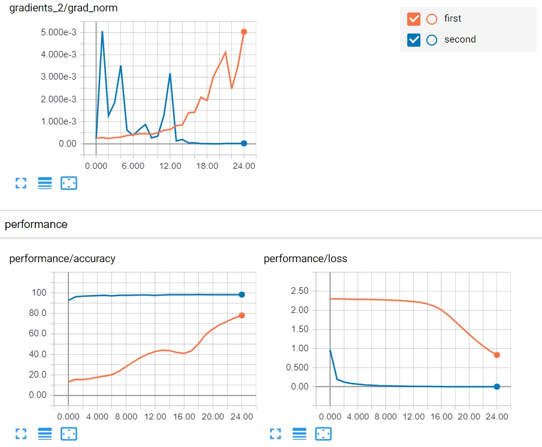
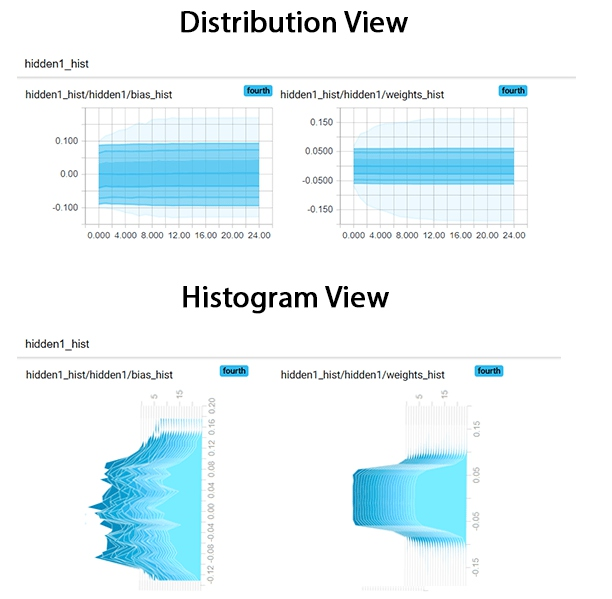

1. 什么是TensorBoard
我们在使用神经网络的时候一般将它看作是个黑盒子，里面到底是什么样，是什么样的结构，是怎么训练的，往往是很难搞清楚的。但是和传统机器学习一样，为了尽可能的接近最优解，深度学习的训练也免不了需要有调参的过程。如果没有任何指导指标，单纯盲目进行参数search的效率往往是非常低下的。
而TensorBoard就是一个能够帮助我们可视化数据和训练过程的一个非常好的工具。合理的使用它可以帮助我们把复杂的神经网络训练过程进行可视化，使得我们可以更好地理解，调试并优化程序。
本文的内容结构为：
- 介绍TensorBoard的启动，及其提供可视化的数据类型
- 介绍训练过程中Scalar数据类型的可视化，并介绍如何据此来获得对模型内部的直觉认识，合理的回避潜在错误
- 介绍如何利用Histogram来可视化Vector或者数据集合
- 通过上述Histogram来比较不同的权重初始化对于神经网络训练时权重更新的影响
在开始之前，确保下面的python库是安装正确的：
1 2 3 4 5 6 7 8 9 10 | from pandas_datareader import data
import matplotlib.pyplot as plt
import pandas as pd
import datetime as dt
import urllib.request, json
import os
import numpy as np
# This code has been tested with TensorFlow 1.6
import tensorflow as tf
from tensorflow.examples.tutorials.mnist import input_data
|
2. 启动TensorBoard
要进行TensorBoard的可视化，首先需要启动该服务，一般流程如下：
- 打开命令行终端
- 进入项目主目录
- 确保激活了安装有TensorFlow的Python虚拟环境，我一般用Anaconda进行Python的版本和包管理，非常方便
- 命令行执行tensorboard --logdir=summaries
--logdir后面是tensorflow的summary所在的目录，这里面包含event文件，保存了TensorBoard展示需要的数据，而这些数据就是TensorFlow中的summary数据。启动后，终端会输出查看TensorBoard的url，在浏览器中就可以打开该url进行查看了。
注意： 尽量避免将不同的event文件放在同一个文件夹，这会导致显示很糟糕的曲线。所以如果想要比较不同的训练过程的话，可以分开放到不同的文件夹下，然后tensorboard启动的时候在所有文件夹的上一级文件夹启动。这样就可以将不同超参下的可视化训练结果在同一张图上进行比较。
3. TensorBoard中的不同视图
不同的视图用以处理不同的数据类型并区别展示，这可以在网页上方的橙色长条处进行选择：
Scalars：可视化scalar值，可以看作是Shape为(1, 1)的值，例如分类准确率Graph：可视化TensorFlow模型所构造的计算图Distributions：可视化数据分布随时间变化的情况，例如神经网络的权重Histograms：和Distributions一样，也是查看数据分布的变化，不同的是这里是3D视角Projector：用来对多维向量(大于3维)进行可视化，内置了t-sne非线性降维和PCA线性降维，可以很方便的可视化NLP中经常使用的高维词向量- Image：可视化图像数据
- Audio：可视化音频数据
- Text：可视化文本数据
本文主要讨论前面5种视图。
4. Scalar数据可视化
当我们训练深度神经网络的时候，一个很棘手的问题就是对于各种网络结构和超参数的选择产生的影响缺乏理解。
例如，如果我们忽视权重初始化方式的选择，可能会导致权重之间存在非常大的方差，模型的训练就有可能迅速偏离正轨。另一方面，即使我们在参数选择的时候很小心，也免不了会出问题。比如学习率的选择，过大或过小的学习率会导致模型发散或者掉入局部最优点。然而并没有永远合适的学习率，这些都需要根据观察训练过程来作出合适的选择。
一个快速定位模型问题的方法就是通过观察模型训练过程的变化，这也是TensorBoard应用的场景。我们可以决定在TensorBoard中展示哪些值，这些值随训练时间的历史变化就会被记录下来，供给我们分析判断。
首先还是拿最常用的MNIST任务集举例说明TensorBoard的用法，这里我们创建了一个5层的神经网络来进行图片的分类。先定义一个简单计算预测正确率的函数accuracy()
1 2 3 4 5 6 | def accuracy(predictions,labels):
'''
Accuracy of a given set of predictions of size (N x n_classes) and
labels of size (N x n_classes)
'''
return np.sum(np.argmax(predictions,axis=1)==np.argmax(labels,axis=1))*100.0/labels.shape[0]
|
4.1 定义输入输出和权重
1 2 3 4 5 6 7 8 9 10 11 12 13 14 15 16 17 18 | batch_size = 100
layer_ids = ['hidden1','hidden2','hidden3','hidden4','hidden5','out']
layer_sizes = [784, 500, 400, 300, 200, 100, 10]
tf.reset_default_graph()
# Inputs and Labels
train_inputs = tf.placeholder(tf.float32, shape=[batch_size, layer_sizes[0]], name='train_inputs')
train_labels = tf.placeholder(tf.float32, shape=[batch_size, layer_sizes[-1]], name='train_labels')
# Weight and Bias definitions
for idx, lid in enumerate(layer_ids):
with tf.variable_scope(lid):
w = tf.get_variable('weights',shape=[layer_sizes[idx], layer_sizes[idx+1]],
initializer=tf.truncated_normal_initializer(stddev=0.05))
b = tf.get_variable('bias',shape= [layer_sizes[idx+1]],
initializer=tf.random_uniform_initializer(-0.1,0.1))
|
通过variable_scope可以更好的进行变量管理。第一层784对应的是MNIST的图片大小28*28.
4.2 计算Logits，预测，损失和优化方法
有了输入输出和模型参数的基础上，就可以进行计算Logits部分图的构建了，这里使用简单的全联接+relu激活层。
随后欧定义损失函数，由于是分类问题，这里使用交叉熵损失。
最后选择优化器，这里使用TensorFlow自带的MomentumOptimizer。
1 2 3 4 5 6 7 8 9 10 11 12 13 14 15 16 17 18 19 | # Calculating Logits
h = train_inputs
for lid in layer_ids:
with tf.variable_scope(lid,reuse=True):
w, b = tf.get_variable('weights'), tf.get_variable('bias')
if lid != 'out':
h = tf.nn.relu(tf.matmul(h,w)+b,name=lid+'_output')
else:
h = tf.nn.xw_plus_b(h,w,b,name=lid+'_output')
tf_predictions = tf.nn.softmax(h, name='predictions')
# Calculating Loss
tf_loss = tf.reduce_mean(tf.nn.softmax_cross_entropy_with_logits_v2(labels=train_labels, logits=h),name='loss')
# Optimizer
tf_learning_rate = tf.placeholder(tf.float32, shape=None, name='learning_rate')
optimizer = tf.train.MomentumOptimizer(tf_learning_rate,momentum=0.9)
grads_and_vars = optimizer.compute_gradients(tf_loss)
tf_loss_minimize = optimizer.minimize(tf_loss)
|
4.3 定义Summaries
接下来就需要定义tf.summary对象了，这也是可以被TensorBoard直接读取展示的实体类型。也就是说，如果想要从TensorBoard观察某个变量的情况，就必须将它封装为tf.summary对象。
TensorFlow中有多种类型的summary，这一小节我们处理tf.summary.scalar类型。这里我们利用tf.name_scope对不同的summary进行分组，那些拥有相同name scope的变量summary将会在TensorBoard中展示为同一行，方便我们查看。
这里定义三个scalar类型的summary：
- tf_loss_summary: 利用placeholder传入loss值
- tf_accuracy_summary: 利用placeholder传入预测的准确率
- tf_gradnorm_summary: 传入神经网络最后一层梯度的L2范数。梯度的范数是判断权重是否被正常更新的一个重要指标。它的值很小说明存在梯度消失问题，过大则暗示有梯度爆炸发生的潜在风险。
注意: 上面使用placeholder注意的指标说明这些值通常是在grpah外获得的，只在需要记录的时候传入数据。而直接将图中的变量封装为summary则往往是因为这个变量的值是graph的一部分，可以直接通过session.run获得。
1 2 3 4 5 6 7 8 9 10 11 12 13 14 15 16 17 18 19 20 21 22 23 | # Name scope allows you to group various summaries together
# Summaries having the same name_scope will be displayed on the same row
with tf.name_scope('performance'):
# Summaries need to be displayed
# Whenever you need to record the loss, feed the mean loss to this placeholder
tf_loss_ph = tf.placeholder(tf.float32,shape=None,name='loss_summary')
# Create a scalar summary object for the loss so it can be displayed
tf_loss_summary = tf.summary.scalar('loss', tf_loss_ph)
# Whenever you need to record the loss, feed the mean test accuracy to this placeholder
tf_accuracy_ph = tf.placeholder(tf.float32,shape=None, name='accuracy_summary')
# Create a scalar summary object for the accuracy so it can be displayed
tf_accuracy_summary = tf.summary.scalar('accuracy', tf_accuracy_ph)
# Gradient norm summary
for g,v in grads_and_vars:
if 'hidden5' in v.name and 'weights' in v.name:
with tf.name_scope('gradients'):
tf_last_grad_norm = tf.sqrt(tf.reduce_mean(g**2))
tf_gradnorm_summary = tf.summary.scalar('grad_norm', tf_last_grad_norm)
break
# Merge all summaries together
performance_summaries = tf.summary.merge([tf_loss_summary,tf_accuracy_summary])
|
4.4 训练神经网络：装载数据，训练，验证及测试
首先，创建一个tf的session，只有在session内，才可以执行之前定义的计算图。随后，创建一个保存summary文件的文件夹。接着利用这个文件夹创建一个summary_writer，利用它来实现对summary对象的文件写入操作。
训练时，每次迭代时都执行之前定义的gradnorm_summary进行记录。每个epoch结束后，计算该epoch内的平均训练损失。
最后，在测试阶段，记录每个batch的accuracy，然后计算整个测试集的平均accuracy。最后通过placeholder传入之前的performance_summaries，再将其也加入summary_writer.
1 2 3 4 5 6 7 8 9 10 11 12 13 14 15 16 17 18 19 20 21 22 23 24 25 26 27 28 29 30 31 32 33 34 35 36 37 38 39 40 41 42 43 44 45 46 47 48 49 50 51 52 53 54 55 56 57 58 59 60 61 62 63 64 65 66 67 68 69 70 71 72 73 74 75 76 77 78 79 80 81 82 | image_size = 28
n_channels = 1
n_classes = 10
n_train = 55000
n_valid = 5000
n_test = 10000
n_epochs = 25
config = tf.ConfigProto(allow_soft_placement=True)
config.gpu_options.allow_growth = True
config.gpu_options.per_process_gpu_memory_fraction = 0.9 # making sure Tensorflow doesn't overflow the GPU
session = tf.InteractiveSession(config=config)
if not os.path.exists('summaries'):
os.mkdir('summaries')
if not os.path.exists(os.path.join('summaries','first')):
os.mkdir(os.path.join('summaries','first'))
summ_writer = tf.summary.FileWriter(os.path.join('summaries','first'), session.graph) # create summary_writer and add graph in it
tf.global_variables_initializer().run()
accuracy_per_epoch = []
mnist_data = input_data.read_data_sets('MNIST_data', one_hot=True)
for epoch in range(n_epochs):
loss_per_epoch = []
for i in range(n_train//batch_size):
# =================================== Training for one step ========================================
batch = mnist_data.train.next_batch(batch_size) # Get one batch of training data
if i == 0:
# Only for the first epoch, get the summary data
# Otherwise, it can clutter the visualization
l,_,gn_summ = session.run([tf_loss,tf_loss_minimize,tf_gradnorm_summary],
feed_dict={train_inputs: batch[0].reshape(batch_size,image_size*image_size),
train_labels: batch[1],
tf_learning_rate: 0.0001})
summ_writer.add_summary(gn_summ, epoch)
else:
# Optimize with training data
l,_ = session.run([tf_loss,tf_loss_minimize],
feed_dict={train_inputs: batch[0].reshape(batch_size,image_size*image_size),
train_labels: batch[1],
tf_learning_rate: 0.0001})
loss_per_epoch.append(l)
print('Average loss in epoch %d: %.5f'%(epoch,np.mean(loss_per_epoch)))
avg_loss = np.mean(loss_per_epoch)
# ====================== Calculate the Validation Accuracy ==========================
valid_accuracy_per_epoch = []
for i in range(n_valid//batch_size):
valid_images,valid_labels = mnist_data.validation.next_batch(batch_size)
valid_batch_predictions = session.run(
tf_predictions,feed_dict={train_inputs: valid_images.reshape(batch_size,image_size*image_size)})
valid_accuracy_per_epoch.append(accuracy(valid_batch_predictions,valid_labels))
mean_v_acc = np.mean(valid_accuracy_per_epoch)
print('\tAverage Valid Accuracy in epoch %d: %.5f'%(epoch,np.mean(valid_accuracy_per_epoch)))
# ===================== Calculate the Test Accuracy ===============================
accuracy_per_epoch = []
for i in range(n_test//batch_size):
test_images, test_labels = mnist_data.test.next_batch(batch_size)
test_batch_predictions = session.run(
tf_predictions,feed_dict={train_inputs: test_images.reshape(batch_size,image_size*image_size)}
)
accuracy_per_epoch.append(accuracy(test_batch_predictions,test_labels))
print('\tAverage Test Accuracy in epoch %d: %.5f\n'%(epoch,np.mean(accuracy_per_epoch)))
avg_test_accuracy = np.mean(accuracy_per_epoch)
# Execute the summaries defined above
summ = session.run(performance_summaries, feed_dict={tf_loss_ph:avg_loss, tf_accuracy_ph:avg_test_accuracy})
# Write the obtained summaries to the file, so it can be displayed in the TensorBoard
summ_writer.add_summary(summ, epoch)
session.close()
|
4.5 可视化结果
4.5.1 可视化计算图
因为上面创建summary_writer的时候，我们已经把session.graph直接传进去了，所以TensorBoard上直接就可以查看定义的图结构了。
从上面的图中，我们可以很清晰的看到数据通过5个隐藏层，从train_inputs到loss和predictions完整的“流动”过程，方便我们查看模型的构造结构有没有问题。
4.5.2 可视化Summary数据
MNIST是一个很简单的分类问题，但是用5层神经网络的话仍然是会有误差的。通过TensorBoard的展示，我们可以看到在5个epoch内，模型就达到了90%以上的准确率。让我们看看TensorBoard中具体的显示情况：
观察及结论：
从上图可以看到准确率在不断上升，但是上升速度很慢，而且梯度却在不断的增长。这其实是很奇怪的，因为正常来说，损失下降，准确率上升，意味着模型正在逐渐收敛，这个时候梯度理应慢慢变小(接近于0)，而不是像上图一样上升。
但是因为准确率是的确在上升的，说明我们的训练是在正确进行的，这就预示着可能我们的学习率选的太小了。接着尝试0.01的学习率，和之前一样的训练过程，这次的结果如下：

观察与结论：
这次可以看到准确率迅速就接近100了，而且梯度也在逐渐下降直至趋近于0。和之前相比，明显我们提高学习率之后的结果好多了，说明之前的分析也是合理的。
5. 直方图/分布的可视化
我们已经了解了如何通过观察Scalar类型的变量来了解模型的行为并修复潜在的问题。除此之外，计算图的可视化让我们可以更直观的感受数据在TensorFlow模型中的流动，这点对于我们查看梯度下降能否顺利进行有着非常重要的意义。
如果图中有参数和预测是不相连的，也就和损失loss是隔离的，那样梯度下降肯定就没办法更新到这些孤立的参数。当然对于那些我们本来就不想让它们进行更新的参数除外。
接下来，就是时候来看数据的分布了。毕竟TensorFlow中大部分的参数都是向量或者矩阵类型的，这个时候如果只看它们的范数或者某一个维度的值都不是最好的选择，而直方图就是观察这种变量的一个很好的方案。
直方图是对于一个数据集合分布的一种表示方式，它体现了每一个变量值的出现次数或者概率密度。观察网络权重的分布是很重要的，如果权重在训练过程中变化的过于剧烈，那往往意味着在权重初始化或者学习率上存在问题。
接下来的例子首先使用truncated_normal_initializer()进行权重初始化
5.1 定义直方图Summary
同样的，直方图Summary也是tf.summary对象。我们对每一层的权重和偏差定义两个直方图summar，tf_w_hist和tf_b_hist。为了观察时方便，我们给每一层定义各自的命名空间。
最后，再使用tf.summary.merge定义一个执行所有summary的op。
1 2 3 4 5 6 7 8 9 10 11 12 13 14 15 | # Summaries need to be displayed
# Create a summary for each weight bias in each layer
all_summaries = []
for lid in layer_ids:
with tf.name_scope(lid+'_hist'):
with tf.variable_scope(lid,reuse=True):
w,b = tf.get_variable('weights'), tf.get_variable('bias')
# Create a scalar summary object for the loss so it can be displayed
tf_w_hist = tf.summary.histogram('weights_hist', tf.reshape(w,[-1]))
tf_b_hist = tf.summary.histogram('bias_hist', b)
all_summaries.extend([tf_w_hist, tf_b_hist])
# Merge all parameter histogram summaries together
tf_param_summaries = tf.summary.merge(all_summaries)
|
5.2 训练神经网络
这一步和之前训练的过程几乎一样了，只是多了一个tf_param_summaries
1 2 3 4 5 6 7 8 9 10 11 12 13 14 15 16 17 18 19 20 21 22 23 24 25 26 27 28 29 30 31 32 33 34 35 36 37 38 39 40 41 42 43 44 45 46 47 48 49 50 51 52 53 54 55 56 57 58 59 60 61 62 63 64 65 66 67 68 69 70 71 72 73 74 75 76 77 78 79 80 81 82 83 | image_size = 28
n_channels = 1
n_classes = 10
n_train = 55000
n_valid = 5000
n_test = 10000
n_epochs = 25
config = tf.ConfigProto(allow_soft_placement=True)
config.gpu_options.allow_growth = True
config.gpu_options.per_process_gpu_memory_fraction = 0.9 # making sure Tensorflow doesn't overflow the GPU
session = tf.InteractiveSession(config=config)
if not os.path.exists('summaries'):
os.mkdir('summaries')
if not os.path.exists(os.path.join('summaries','third')):
os.mkdir(os.path.join('summaries','third'))
summ_writer_3 = tf.summary.FileWriter(os.path.join('summaries','third'), session.graph)
tf.global_variables_initializer().run()
accuracy_per_epoch = []
mnist_data = input_data.read_data_sets('MNIST_data', one_hot=True)
for epoch in range(n_epochs):
loss_per_epoch = []
for i in range(n_train//batch_size):
# =================================== Training for one step ========================================
batch = mnist_data.train.next_batch(batch_size) # Get one batch of training data
if i == 0:
# Only for the first epoch, get the summary data
# Otherwise, it can clutter the visualization
l,_,gn_summ, wb_summ = session.run([tf_loss,tf_loss_minimize,tf_gradnorm_summary, tf_param_summaries],
feed_dict={train_inputs: batch[0].reshape(batch_size,image_size*image_size),
train_labels: batch[1],
tf_learning_rate: 0.00001})
summ_writer_3.add_summary(gn_summ, epoch)
summ_writer_3.add_summary(wb_summ, epoch)
else:
# Optimize with training data
l,_ = session.run([tf_loss,tf_loss_minimize],
feed_dict={train_inputs: batch[0].reshape(batch_size,image_size*image_size),
train_labels: batch[1],
tf_learning_rate: 0.01})
loss_per_epoch.append(l)
print('Average loss in epoch %d: %.5f'%(epoch,np.mean(loss_per_epoch)))
avg_loss = np.mean(loss_per_epoch)
# ====================== Calculate the Validation Accuracy ==========================
valid_accuracy_per_epoch = []
for i in range(n_valid//batch_size):
valid_images,valid_labels = mnist_data.validation.next_batch(batch_size)
valid_batch_predictions = session.run(
tf_predictions,feed_dict={train_inputs: valid_images.reshape(batch_size,image_size*image_size)})
valid_accuracy_per_epoch.append(accuracy(valid_batch_predictions,valid_labels))
mean_v_acc = np.mean(valid_accuracy_per_epoch)
print('\tAverage Valid Accuracy in epoch %d: %.5f'%(epoch,np.mean(valid_accuracy_per_epoch)))
# ===================== Calculate the Test Accuracy ===============================
accuracy_per_epoch = []
for i in range(n_test//batch_size):
test_images, test_labels = mnist_data.test.next_batch(batch_size)
test_batch_predictions = session.run(
tf_predictions,feed_dict={train_inputs: test_images.reshape(batch_size,image_size*image_size)}
)
accuracy_per_epoch.append(accuracy(test_batch_predictions,test_labels))
print('\tAverage Test Accuracy in epoch %d: %.5f\n'%(epoch,np.mean(accuracy_per_epoch)))
avg_test_accuracy = np.mean(accuracy_per_epoch)
# Execute the summaries defined above
summ = session.run(performance_summaries, feed_dict={tf_loss_ph:avg_loss, tf_accuracy_ph:avg_test_accuracy})
# Write the obtained summaries to the file, so they can be displayed
summ_writer_3.add_summary(summ, epoch)
session.close()
|
5.3 观察权重和偏差的直方图
接下来的图就是权重和偏差的直方图了。可以看到图是个3D视角的，x轴(前后方向)是时间，y轴(左右方向)是具体的值，然后z轴(高度)是该值的频次。
颜色越浅的部分说明是越新的数据。然后越高的区域说明所表示的向量包含这个区域的值更多。
5.4 不同初始化的影响
不同于上面使用的truncated_normal_initializer()，这次我们使用xavier_initializer()。在一般的深度学习场景中，这通常是更好的选择。
不同于truncated_normal_initializer由用户指定参数初始化时的方差，xavier初始化可以基于当前层的输入和输出维度自动计算合适的标准差。这可以有效的帮助梯度从顶层向底层流动，避免出现梯度消失的问题。
代码基本是一样的，只是使用了xavier初始化：
1 2 3 4 5 6 7 8 9 10 11 12 13 14 15 16 17 18 | batch_size = 100
layer_ids = ['hidden1','hidden2','hidden3','hidden4','hidden5','out']
layer_sizes = [784, 500, 400, 300, 200, 100, 10]
tf.reset_default_graph()
# Inputs and Labels
train_inputs = tf.placeholder(tf.float32, shape=[batch_size, layer_sizes[0]], name='train_inputs')
train_labels = tf.placeholder(tf.float32, shape=[batch_size, layer_sizes[-1]], name='train_labels')
# Weight and Bias definitions
for idx, lid in enumerate(layer_ids):
with tf.variable_scope(lid):
w = tf.get_variable('weights',shape=[layer_sizes[idx], layer_sizes[idx+1]],
initializer=tf.contrib.layers.xavier_initializer())
b = tf.get_variable('bias',shape= [layer_sizes[idx+1]],
initializer=tf.random_uniform_initializer(-0.1,0.1))
|
两次不同初始化的效果比较
通过两次不同的初始化方式，得到如下不同的结果比较：
可以看到，xavier_initializer相对正态初始化，可以使得更多的权重非零。这就使得xavier初始化的网络可以更快速的收敛。
5.5 分布视角下的直方图
对于数据分布的观察，除了上面的直方图视角，TensorBoard还提供一种distribution view。

它所显示的信息和之前是一样的，只是表达方式不同。它是Histogram的俯视视角。
6. Projector可视化
Projector顾名思义，是起投影作用的，可以将高维空间投影到低维向量空间。因为人只能直观感受3维以下的空间。而NLP中常用的词向量embedding都是几百维的，这就导致可视化非常困难。因此我们以词向量的展示来解释Projector是如何进行降维并观察这些高维词向量的。
Projector和之前summary对象略有不同，这里并不定义summary对象，因此也没有event文件。
1 2 3 4 5 6 7 8 9 10 11 12 13 14 15 16 17 18 19 20 21 | from tensorflow.contrib.tensorboard.plugins import projector
# Create graph and intialize embedding variable by pretrained vectors
graph = tf.Graph()
with graph.as_default():
embedding_matrix = tf.Variable(np.array(embedding_dict.values()))
saver = tf.train.Saver([embedding_matrix])
# Save model which stores embedding vectors
with tf.Session(graph=graph) as sess:
sess.run(tf.global_variables_initializer())
saver.save(sess, os.path.join(os.path.join(summary_path, "model.ckpt")))
# Projector config
config = projector.ProjectorConfig()
vectors = config.embeddings.add()
vectors.tensor_name = embedding_matrix.name
vectors.metadata_path = "vocabulary.tsv"
summary_writer = tf.summary.FileWriter(summary_path)
projector.visualize_embeddings(summary_writer, config)
|
projector并从event文件中读入summary对象的数据，它从ckpt模型文件中读取embedding变量的值。因此在创建的时候会生成一个projector_config.pbtxt文件。内容如下：
1 2 3 4 | embeddings {
tensor_name: "Variable:0"
metadata_path: "vocabulary.tsv"
}
|
其中tensor_name会指明在ckpt模型文件中读入哪个tensor的值，而meta文件代表embedding的key，就是具体的词表了，这个也是在上面我们自己生成的，这个要注意，如果词表和向量矩阵错位的话，展示的词可能就对应串了。没有ckpt文件，projector无法获取向量，无从展示。没有meta文件，projector纯展示向量在空间的点，没办法进行分析。
PCA降维展示结果：
可以看到点在3维空间中并没有很好出现clustering的效果，直接看基本都离散的，看不出点与点直接的联系。这也很正常，因为PCA的降维是线性降维，3个主成分可以解释的variance只有16.1%，说明为了实现这样的降维，丢掉了词太多的语义信息，也难怪可视化的效果不佳。
虽然可视化结果不佳，但是当我们选择点的时候，发现距离它最近的点还是很符合词向量特点的，基本是同义词或者语义特征很相似的词。
T-SNE降维展示结果： 出于t-sne算法的效率考虑，这里我选择了top8000的词。
作为非线性降维的典范，t-sne降维保留了更多的词向量语义，结果也直观得多。随着算法的收敛，点在空间中很快出现不同区域的密集分布了。我们查看一下几个比较密的区域的词的性质。
可以看到右下角的区域都是一堆中国人名的姓。
左下角是理发修容相关的。
左上角是蔬菜。
中间又有一片区域是水果。
是不是很酷？而且理论上来说词向量训练的越好，这样的性质就会越明显。有的时候甚至能进行中国 - 北京 = 法国 - 巴黎这样的语义推断。词向量还有很多有意思的特性，感兴趣的小伙伴可以自己去挖掘，而合理的使用TensorBoard可以更方便的帮我们进行这样的直观操作。
7.总结
在这篇TensorBoard的教程中，我们通过一个多层的前向网络处理了MNIST问题。并在处理问题中学会了如何使用TensorBoard中的Scalar，Histogram等summary来观察训练过程中的指标。通过这些指标来诊断模型潜在的诸如学习率，初始化方式等问题。
然后我们讲解了如何通过Projector来对高维向量进行降维后可视化的操作，使得我们可以方便直观的观察词向量的训练结果，直观判断一份词向量的好坏。
当然，深度学习模型的调参优化并没有一蹴而就的方法，本文所讲的也是几种比较浅显的手段。要成为一名合格的算法工程师，在理论基础上多做实验，多思考积累经验才能更好的应对模型训练过程中出现的问题。
参考文献
[1] TensorBoard官方教程